Activity: Copying a face and using keypoints to define movement
This activity guides you through the process of copying a face and using other geometry to define the movement direction and distance. Copy the lower hole (2) and positioned it at the same angle and distance as the upper holes (1).
Click here to download the activity file.
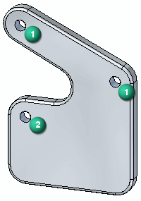
If you are using Internet Explorer and a video is not displaying in your training guide, click the Tools tab (or gear icon)→Compatibility View settings, and then clear the selection of Display intranet sites in Compatibility View.
Open move_02.par.
Select the cylindrical face shown.
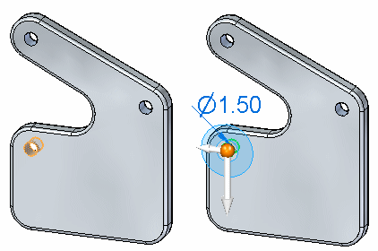
On the Move command bar, choose the Copy option.
At this point, the steering wheel origin is at the center of the selected cylindrical face. Move the origin to the top left hole.
Click the steering wheel origin and then move the cursor to the upper left hole. Click when the origin locks to the center of the hole. You may have to zoom in if you have trouble locking to the center of the hole.
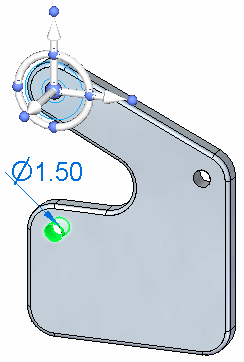
Click the axis knob shown. This controls the axis direction.
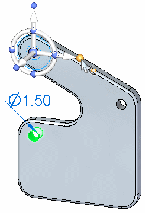
Move the cursor over the cylindrical face shown, and click when the center point symbol appears.
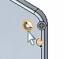
Notice that the axis now points to the center of the hole. Direction definition is complete.
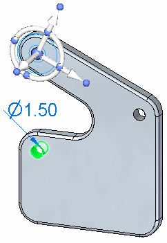
Click the axis to start the Move command.
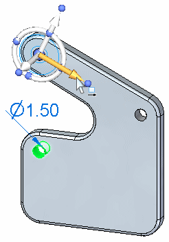
Make sure the keypoints option in command bar is set to All or Center Point
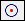
.Click the center of the hole shown. This defines the move distance. Click again to end the command.
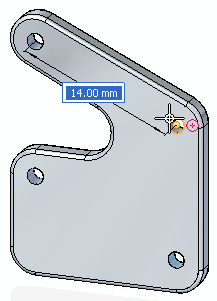
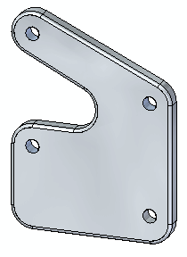
Measure the copied distance. On the Inspect tab→3D Measure group, choose the Measure Distance command
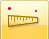
.Measure the distance between the top two holes. Click when the center point highlights. Notice the minimum distance and then click Reset in the command bar. The distance is 14 mm.
Measure the distance between the lower two holes. The distance between the holes should also be 14 mm.
This ends the activity. Exit the file and do not save.
In this activity you learned how to use the 3D steering wheel to control a move or copy operation. You learned how to redefine an origin point (move from point) and how to modify the direction of a move. You used face keypoints to define the move/copy direction and distance.
Click the Close button in the upper-right corner of the activity window.